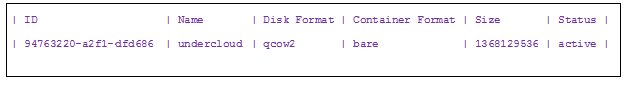
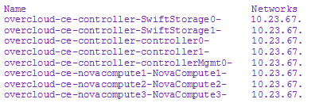
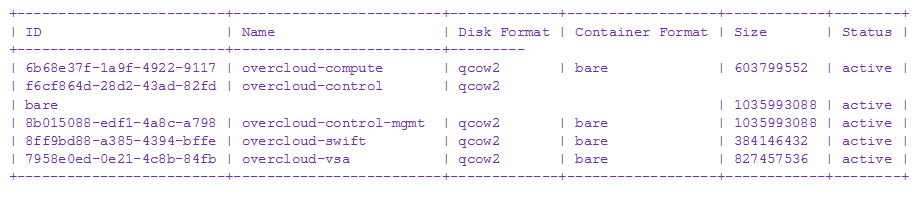

HP Helion OpenStack® 1.0 Update Prerequisites
Prior to getting a system ready for update and performing the update, there might be a few tasks that you need to complete that could affect the update outcome. Read this document for information about:
Perform a system check
If you have changed your admin password for undercloud you need to make sure you update the files below, if you have not already done so.
If you do not update the password in configuration files, the update will fail.
If you have not changed your undercloud admin password you can skip this task.
a. Edit the seed cloud host root directory. In the
/root/tripleo/tripleo-undercloud-passwordsfile, modify theUNDER_CLOUD_ADMIN_PASSWORDvalue.b. Edit file environment variables JSON file. In the
/root/tripleo/ce_env.jsonfile, update the undercloud"password":line with the new password. for example:"undercloud": { "password": "65eef816ac721d6f1b870dfaaff0e7a781dfbc04",c. Edit the
stackrcfile on the undercloud to contain the new password. Use SSH to access the undercloud, edit the OS_PASSWORD variable in thestackrcfile and save the change.ssh heat-admin@<undercloudIP> sudo -iPrior to starting update you need to verify you are running Ubuntu that is greater than 3.13.0-36 on your seed cloud host machine.
Verifying and obtaining the correct kernel may vary depending on distribution. From a command prompt seed cloud host run the following command to verify the operating system and current version:
uname -rFollow instructions for your Linux distribution to update.
Gather information needed for update
To perform a node-by-node or group-by-group update, you will need the IPs of the nodes you are updating and the image IDs of the new images to place on the nodes.
During the update, you might be asked for various IPs and image ID's, when you are refer to this section or save off the information and use it where required.
Determine IP of nodes
The administrator should know the IP address of the seed cloud host node. Other IP address can be obtained using the commands below. Please record these for later use.
Undercloud IP
To obtain the IP addresses of the undercloud nodes, run the following commands:
Log in the seed cloud host.
sudo su -SSH to the seed VM.
ssh root@192.0.2.1Point the
stackrcfile at the undercloud:source ./stackrcNote: This command is described in Updating the Undercloud.
Run the following command:
nova list
The IP addresses of the Undercloud will be listed in the nova list results.
Undercloud Image ID
To determine image ID of the undercloud nodes:
Log in the seed cloud host.
sudo su -SSH to the seed VM.
ssh root@192.0.2.1Point the
stackrcfile at the undercloud:source ./stackrcNote: This command is described in Updating the Undercloud.
Run the following command:
glance image-list | grep qcow2The output appears silimar to the following:

The ID is to the left of the image name you are looking for. For exaple, the undercloud main image is
undercloudand it has image id94763220-a2f1-edfd686.
Overcloud IP
To obtain the IP addresses of the overcloud nodes, perform the following:
Log in the seed cloud host.
sudo su -SSH to the seed VM.
ssh root@192.0.2.1SSH into the Undercloud then become root and source the stackrc file:
ssh heat-admin@<Undercloud IP> sudo -i source ./stackrcNote: This command is described in Updating the Overcloud.
nova list | awk -F"|" '{gsub(/ctlplane=/,"",$7); print $3,$7;}'The output appears silimar to the following (node names and full IP addresses have been removed for this image):

Overcloud Image ID
Log in the seed cloud host:
sudo su -SSH to the seed VM:
ssh root@192.0.2.1SSH into the undercloud then become root and source the stackrc file:
ssh heat-admin@<Undercloud IP> sudo -i source ./stackrcExecute following command:
glance image-list | grep qcow2
The output appears silimar to the following (the full iamge IDs have been removed for this image):

The ID is to the left of the image name you are looking for. For example, the
controllerMgmtmain image isovercloud-control-mgmtand it has image id8b015088-edf1-4a8c-a798
Next Steps
Update the seed VM.
For information, see Updating the Seed VM.